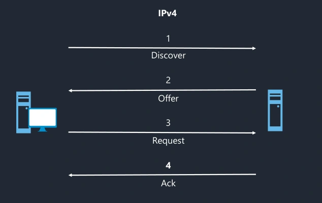

Transcription du document de formation dans l’ordre des pages.
Module 06 - Le DHCP

| Nom du paquet | isc-dhcp-server |
| Fichiers de configuration | /etc/default/isc-dhcp-server /etc/dhcp/dhcpd.conf |
| Fichier de baux | /var/lib/dhcp/dhcpd.leases |
| Nom du service | isc-dhcp-server |
| Fichier journal | /var/log/syslog |
Transcription du détail du support.
# vi /etc/default/isc-dhcp-server
INTERFACESv4="ens35"
INTERFACESv6=""Transcription du détail du support.
# vi /etc/dhcp/dhcpd.conf
option domain-name "demo.example";
option domain-name-servers 172.16.17.18;
# 6H 6m 6s = 21966s
default-lease-time 21966;
max-lease-time 42000;
ddns-update-style none;
authoritative;
log-facility local7;
subnet 192.168.42.0 netmask 255.255.255.0 {
}
subnet 172.19.0.0 netmask 255.255.0.0 {
range 172.19.2.0 172.19.9.255;
option routers 172.19.1.1;
}
host wifi-hp-04 {
hardware ethernet 08:00:07:26:c0:a5;
fixed-address 172.20.0.2;
}systemctl (status|stop|start|restart) isc-dhcp-serverdhcpd -dTranscription du détail du support.
# vi /etc/default/isc-dhcp-relay
# Defaults for isc-dhcp-relay initscript
# What servers should the DHCP relay forward requests to?
SERVERS="192.168.42.2"
# On what interfaces should the DHCP relay (dhrelay) serve DHCP requests?
INTERFACES="ens33 ens35"
# Additional options that are passed to the DHCP relay daemon?
OPTIONS=""